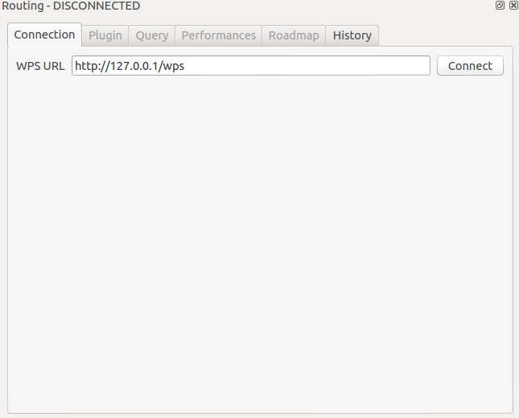
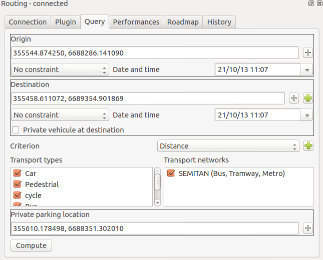

Documentation
Tempus is designed around a core, whose documentation is detailed here. Main classes processed by TempusV2 are:
- Tempus::Road::Graph representing the road graph
- Tempus::PublicTransport::Graph representing a public transport graph
- Tempus::POI representing points of interest on the road graph
- Tempus::Multimodal::Graph which is a wrapper around a road graph, public transport graphs and POIs
These graphs are filled up with data coming from a PostgreSQL/PostGIS database. Please refer to the Db namespace to see available functions. Especially have a look at the Tempus::PQImporter class.
The Tempus SQL schema can be found in tempus.sql
Path planning algorithms are designed to be written as user plugins. The Plugin base class gives access to some callbacks. Please have a look at the three different sample plugins shipped with TempusV2: Tempus::RoadPlugin, Tempus::PtPlugin and Tempus::MultiPlugin.
User plugins respond to path planning requests stored in the Request class and should return one or more roadmaps.
The internal API is exposed to other programs and languages through a WPS server.
C++ API
A detailed description of the C++ API documentation can be found (generated by Doxygen)
Developer manual
A developer manual is also available (French only for now).
WPS server
A WPS server is part of Tempus. It will load the user plugins as well as road and public transport data found in a given PostgreSQL/PostGIS database and allows a user to request path planning through a web server.
The WPS server uderstands XML requests. Those can be written directly, using a python script or using QGIS via the provided plugin.
Python generated requests
Communication with the WPS server can be done through the Tempus Python module. These are convenience functions on top of WPS HTTP communication and XML parsing.
An example of such scripts can be found in random_batch.py
The core of this script is a call to TempusRequest.request, where plugin and query options can be set. For instance :
result = tempus.request( plugin_name = "sample_road_plugin",
plugin_options = { 'prepare_result' : True },
origin = dep,
criteria = [Cost.Distance, Cost.NumberOfChanges],
steps = [RequestStep(destination = arr)] )
QGIS generated requests
A client for QGIS is shipped with Tempus. It can be installed as a QGIS Python plugin. Once activated, the user interface displayed uses different tabs for each step of a request.
It first requires a WPS server to connect to.
Once connected, the user has to select the plugin to use and the corresponding options.

The request tab allows then to express the multimodal path planning request. Intermediary steps can be added dynamically. For now, coordinates are filled by a mouse click on the QGIS canvas, no geocoding is done.
Once the path has been computed, QGIS will display a new vector layer with the corresponding path. The 'roadmap' tab gives details of the roadmap returned by the plugin, as well as a profile of altitutes along the way, if available within the database.


Plugin developers can access user-defined metrics through the 'Performances' tab.
Every path planning request is saved on disk and can be accessed later on, with the last tab. It also allows to import requests stored on user history files (the sample batch script random_batch.py creates such a file).

Data loader
Tempus is shipped with a data loader which comes as a Python application with SQL scripts. It can be used to populate a Tempus PostgreSQL/PostGIS database with data from an external format.
Supported formats supported so far are:
- TomTom multinet (2011.3)
- NavTeq (2008.3, 2009.3)
- OpenStreetMap (CloudMade shapefiles and .osm through osm2shp++)
- GTFS